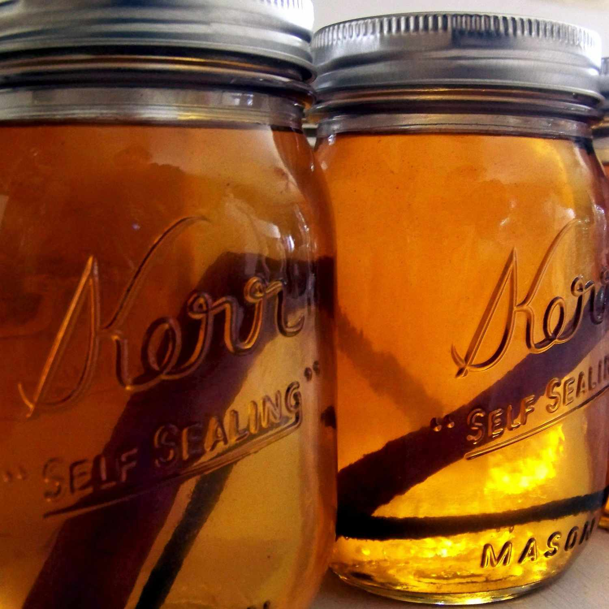

Apple Liqueur

This apple pie moonshine is delish!
Ingredients
- ½ gallon apple cider
- ½ gallon apple juice
- 1 cup white sugar
- 1 cup brown sugar
- 4 cinnamon sticks
- 1 whole clove
- 3 cups 190 proof grain alcohol
- 2 cups vanilla vodka
Steps
- Place apple cider, apple juice, white sugar, brown sugar, cinnamon sticks, and whole clove in a large pot over high heat. Bring to a boil, then reduce heat to medium-low and simmer for 20 minutes. Remove from heat and allow to cool completely.
- Stir grain alcohol and vanilla vodka into the cooled mixture. Pour into clean bottles or jars; store in the refrigerator.